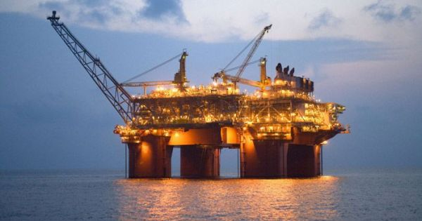
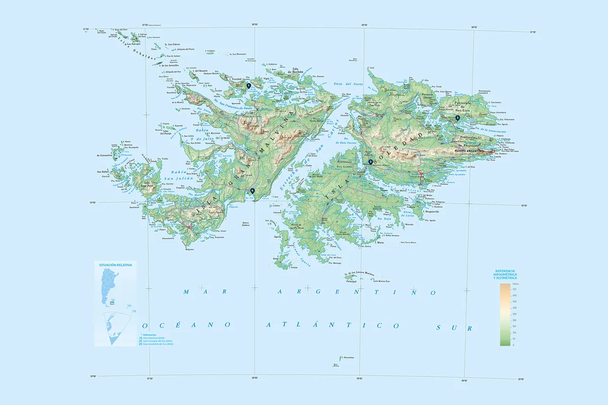
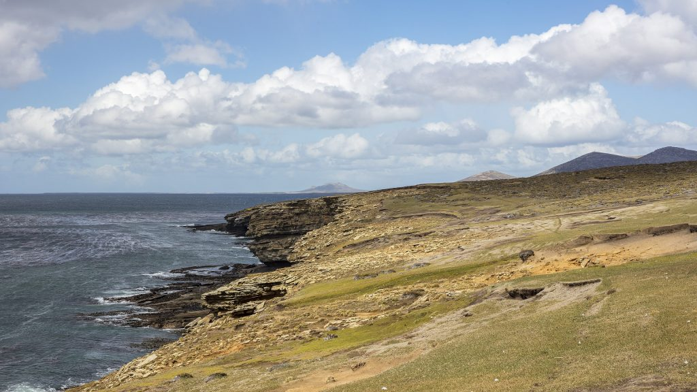

Los recursos de Las Islas Malvinas y Georgias del Sur que serán importantes en el futuro.
Las Islas Malvinas son las Islas que llevan en disputa entre el Reino Unido y Argentina por mucho más de un siglo. En estas islas ocurrieron varios conflictos bélicos y jurídicos a lo largo de su historia debido al reclamo de soberanía por parte de Argentina sobre estas, y la usurpación de Gran Bretaña que hasta hoy en día sigue vigente y más fuerte que nunca.
Pero entonces, ¿Qué es lo que hace a estas Islas tan importantes más allá de su historia?
Bueno para empezar debemos saber que además de ser un punto geoestratégico importante entre el continente Americano y la Antártida, poseen una gran variedad de recursos naturales y una flora y fauna muy diversa.
Hoy en día, el petróleo es uno de los recursos más solicitados a nivel mundial y uno de los cuales se está depredando a gran velocidad. Además, es el motor de la economía globalizada que tenemos hoy en día ya que es el recurso utilizado en los motores que mueven la mayoría de vehículos en el mundo. Entonces, cada país capaz de explotarlo obtiene su recompensa económica. Una petrolera británica dice que halló en las Malvinas un yacimiento de 242 millones de barriles de petróleo, lo que significa millones de dólares a favor de la economía de Gran Bretaña, millones que en Argentina son necesarios para la actual deuda externa.

El agua potable es un recurso necesario para la vida diaria de cualquier ser humano por lo que es un recurso muy preciado. Estas islas también poseen grandes reservas de agua potable que en una futura crisis van a ser indispensables.

La vida marina es constantemente explotada por la pesca, ya sea para la alimentación o la venta de pescado. Por lo cual es otro recurso importante al momento de ver la diversidad de fauna y los ingresos que esta puede generar. Estas islas cuentan con muchos tipos de animales marinos como las medusas, caranchos, moluscos, etc.

Contacto: martin059t@gmail.com